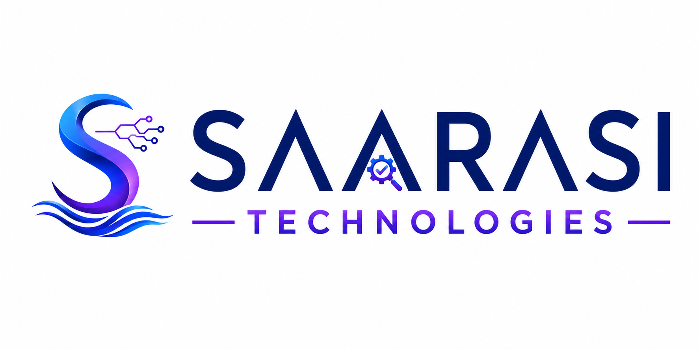

Salesforce implementation
Configure and extend Salesforce to give your sales, service and operations teams a single, scalable customer platform.
- Sales and service cloud delivery
- Workflow and integration design
- Adoption-ready platform rollouts

Enterprise delivery, made practical
Saarasi Technologies helps teams implement, test and scale the systems that power better customer experiences and smarter decisions.
What we do
From platform implementation to data foundations, we bring focused expertise across the systems your teams depend on every day.
Configure and extend Salesforce to give your sales, service and operations teams a single, scalable customer platform.
Build efficient service operations with ServiceNow implementations designed around real workflows, measurable outcomes and lasting adoption.
Protect every release with quality engineering that covers the full journey—from strategy and automation to performance and reliability.
Turn fragmented operational data into reliable, well-governed foundations for reporting, analytics and intelligent decisions.
Built for delivery
Every engagement starts with the outcomes your people, customers and operations need.
Focused delivery across Salesforce, ServiceNow, quality engineering and data.
Thoughtful testing and documentation are embedded from discovery to handover.
How we work
We understand your current platforms, processes and goals.
We shape a practical roadmap, architecture and delivery plan.
We build iteratively, test thoroughly and keep stakeholders close.
We help your teams adopt, operate and continuously improve.
Let’s build what’s next
Tell us about the platform, quality or data challenge you want to solve. We’ll start with a practical conversation.